Part 2: Lith Harbor to first job (Magician)
Part 2 of the leveling guide. Source-backed draft; not a measured minimum-time route.
About this guide
Status: source-backed draft, not a measured fastest route. It starts where Part 1 ends: in Lith Harbor, fresh off the ship, about level 8 (7 at minimum) with the mesos you had left after the fare. It ends when you become a Magician in Ellinia at level 10.
Lith Harbor's four training quests from Olaf and Teo all need level 8. They are done in two loops into the fields east of town. One kill counts for every active quest that asks for that monster, so the Slimes and Pigs are hunted once for two quests each.
The quests leave you around level 9. When no quest is left at your level the guide says so with a "Go grind" step: grind anywhere you can kill quickly without competing for monsters, then continue. At level 10 Phil hands in his quest and drives you to Ellinia for first job.
Reading the images: green circles mark the NPC to talk to; blue circles mark the portal to enter. Each image shows your current map. Artwork is from NiaMeowDB; the highlights were added locally.
1. Lith Harbor: pick up the first training quests0 / 3
Map, completion and why
Complete when: Phil's Call is active in your quest log.
Why: Phil's Call has no objective except reaching level 10 as a Beginner. It pays 188 XP and 245 mesos when you come back at 10, and Phil then drives you to Ellinia at a beginner discount.
Sources: Phil's Call
Map, completion and why
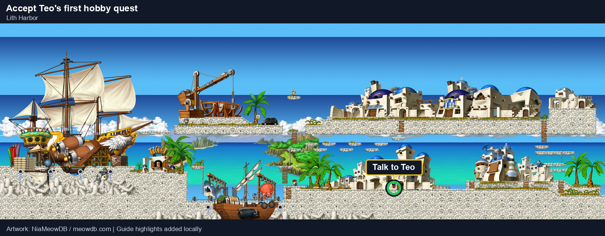
Complete when: Teo's Weird Hobby is active in your quest log.
Why: Teo and Olaf both stand on the way to the east exit, and their four quests are the only level-8 quests on this side of the island. They pay 277 mesos each, which also pays for the ride to Ellinia later.
Sources: Teo's Weird Hobby
Map, completion and why
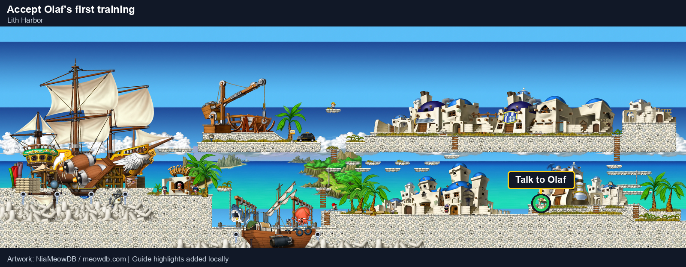
Complete when: Olaf's First Training is active in your quest log.
Why: Both quests ask for Slimes. One Slime kill counts for every active quest that needs Slimes, so accepting both now means you hunt the Slimes once.
Sources: Olaf's First Training


2. Thicket Around the Beach I: Stumps and Slimes0 / 4
Map, completion and why
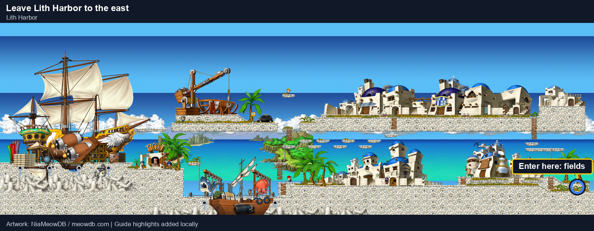
Complete when: You arrive on Right Around Lith Harbor.
Why: This is the only exit from Lith Harbor toward the hunting fields.
Map, completion and why
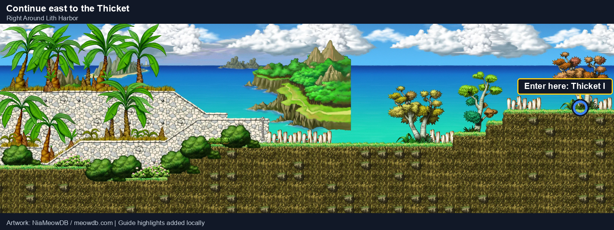
Complete when: You arrive on Thicket Around the Beach I.
Why: This map has Slimes but no Stumps. The next map has both, so hunt there.
Map, completion and why
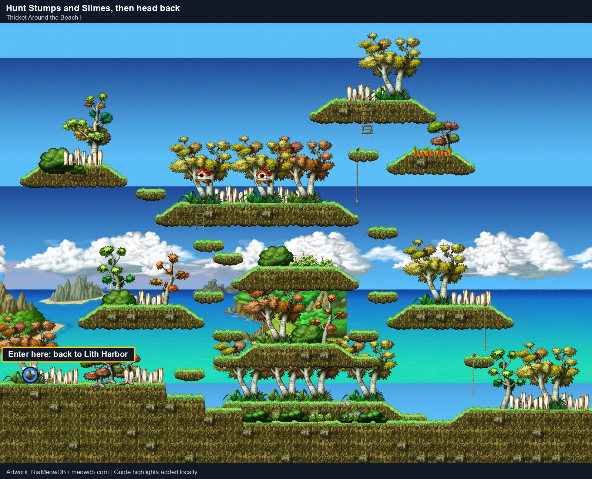
Complete when: You arrive on Right Around Lith Harbor.
Why: Thicket Around the Beach I is the first map with both Stumps (11) and Slimes (11). It is two maps from Lith Harbor. The 10 Slimes cover Teo's 10 and Olaf's 8 at the same time.
Unresolved: The Slime Bubble drop chance is not published. Keep hunting Slimes until you have one.
Sources: Thicket Around the Beach I · Teo's Weird Hobby · Olaf's First Training
Map, completion and why
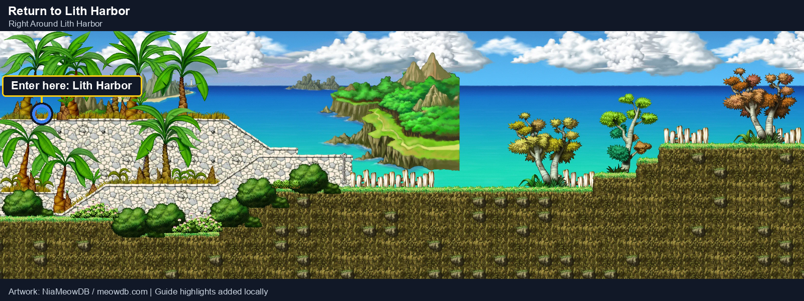
Complete when: You arrive on Lith Harbor.
Why: Teo and Olaf take the turn-ins in Lith Harbor.


3. Lith Harbor: turn in, pick up the second training quests0 / 2
Map, completion and why
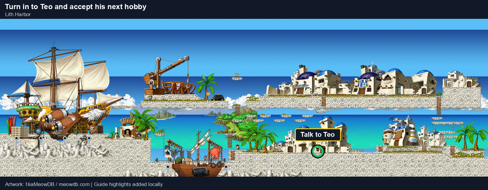
Complete when: Teo's Weird Hobby is complete and Teo's Even Weirder Hobby is active.
Why: The second Teo quest unlocks only when the first is handed in.
Sources: Teo's Weird Hobby · Teo's Even Weirder Hobby
Map, completion and why
Complete when: Olaf's First Training is complete and Olaf's Second Training is active.
Why: Pigs count for Teo's and Olaf's second quests at the same time, so both are hunted together next.
Sources: Olaf's First Training · Olaf's Second Training


4. Thicket Around the Beach II: Pigs and Orange Mushrooms0 / 6
Map, completion and why
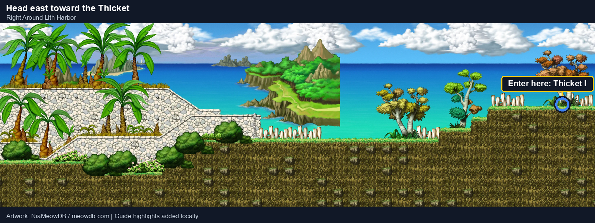
Complete when: You arrive on Thicket Around the Beach I.
Why: Pigs do not live on this map; keep moving.
Map, completion and why
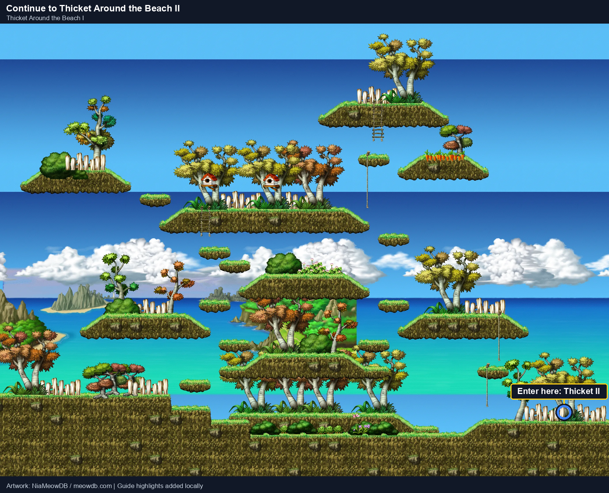
Complete when: You arrive on Thicket Around the Beach II.
Why: Pigs and Orange Mushrooms first appear on the next map.
Map, completion and why
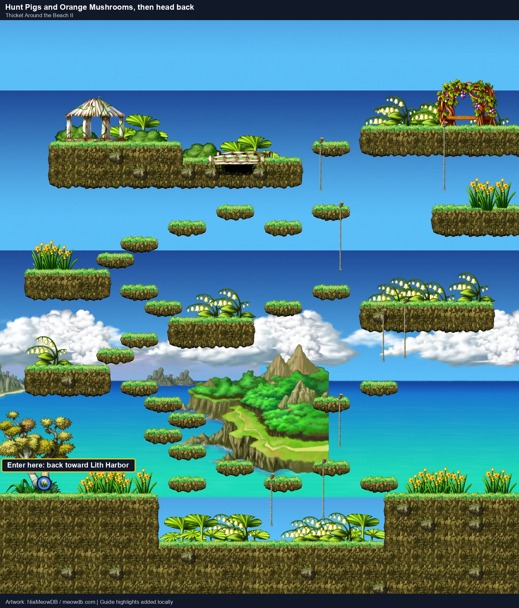
Complete when: You arrive on Thicket Around the Beach I.
Why: Thicket Around the Beach II has 18 Pigs and 9 Orange Mushrooms, the only nearby map with both, and the Pigs count for Teo and Olaf at the same time.
Unresolved: The Pig's Head drop chance is not published.
Sources: Thicket Around the Beach II · Teo's Even Weirder Hobby · Olaf's Second Training
Map, completion and why
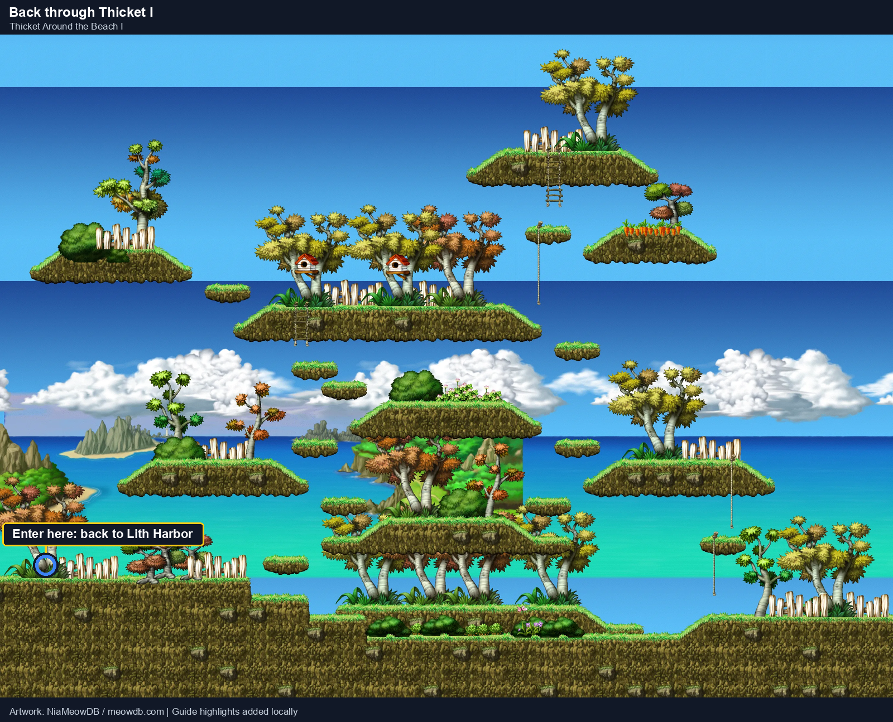
Complete when: You arrive on Right Around Lith Harbor.
Why: Heading back to Lith Harbor for the turn-ins.
Map, completion and why
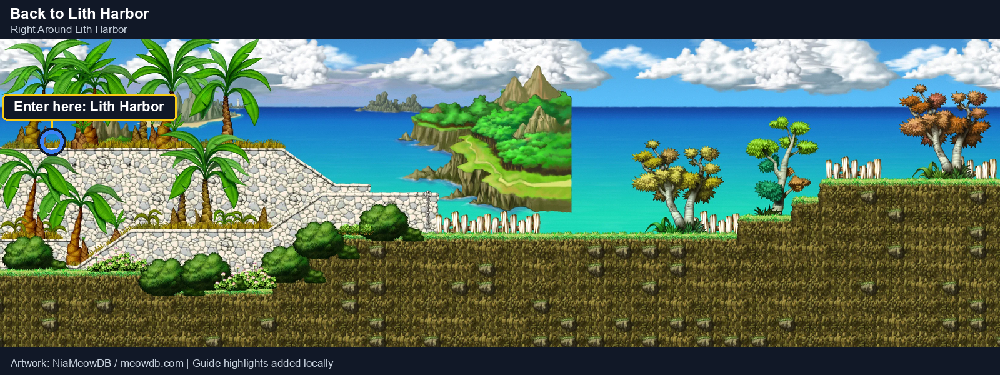
Complete when: You arrive on Lith Harbor.
Why: Teo, Olaf and the ride to Ellinia are all in Lith Harbor.


5. Lith Harbor: final turn-ins and the ride to Ellinia0 / 4
Map, completion and why
Complete when: Teo's Even Weirder Hobby is complete.
Why: Teo is on the walk to the turn-in at Olaf.
Sources: Teo's Even Weirder Hobby
Map, completion and why
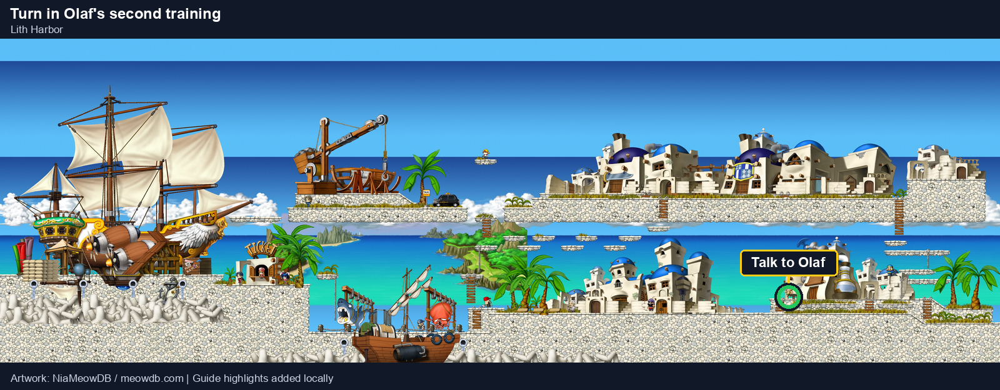
Complete when: Olaf's Second Training is complete.
Why: This is the last Lith Harbor quest you can take before first job.
Sources: Olaf's Second Training
Completion and why
Complete when: You are level 10 and back in Lith Harbor.
Why: First job and Phil's Call both need level 10, and no other quest is open below it. Busy maps change from hour to hour, so the guide does not pick a spot: choose one you can hold to yourself.
Map, completion and why
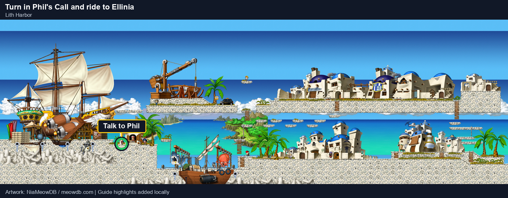
Complete when: You arrive in Ellinia.
Why: Ellinia is on the far side of the island. Phil offers beginners a discounted ride to their job town, much faster than walking through Henesys.
Unresolved: The ride's price is not published. Players report about 50 to 100 mesos; this guide budgets 100.
Sources: Phil's Call · Phil


6. Ellinia: first job0 / 2
Map, completion and why
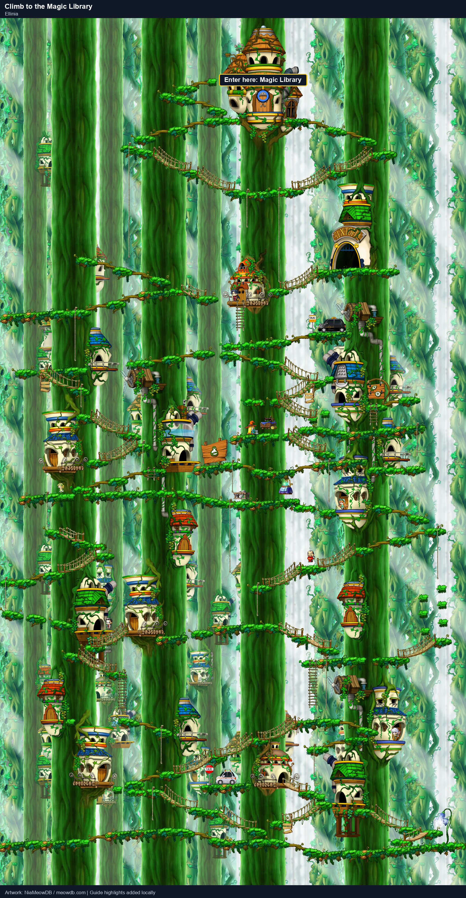
Complete when: You arrive on Magic Library.
Why: Grendel, the Magician job instructor, is inside the Magic Library.
Map, completion and why
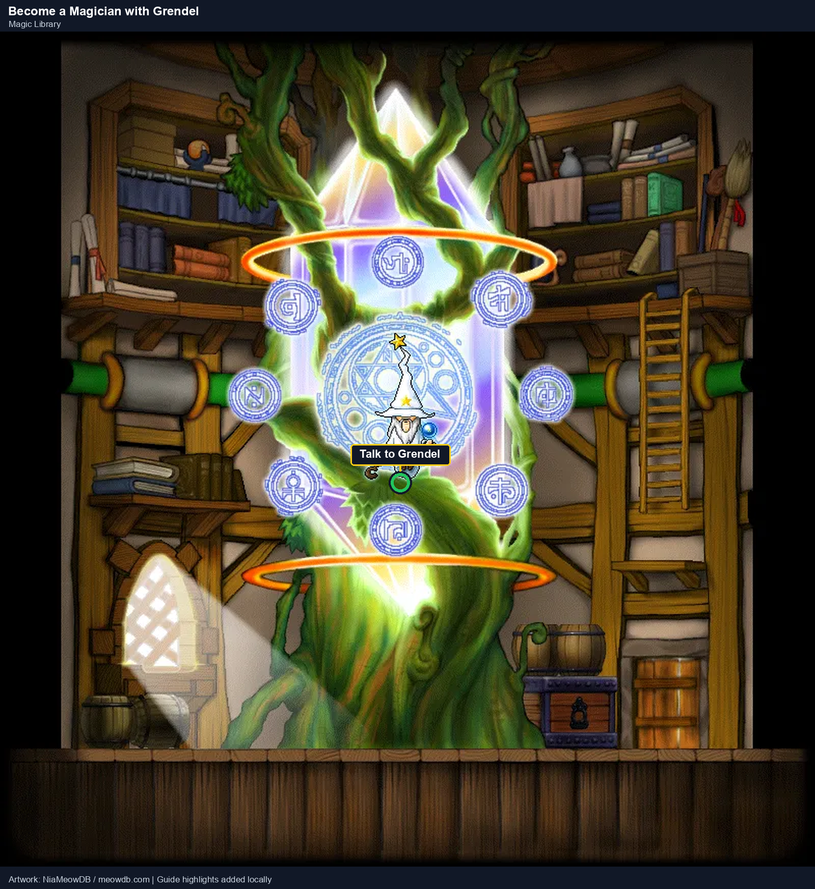
Complete when: Your job shows Magician.
Why: First job is available at level 10 with no stat requirement. Everything after this point uses Magician skills, so Part 3 starts here.
Sources: Grendel the Really Old · Magician class guide


Next: Part 3 — First job to level 20
You are a level-10 Magician in the Magic Library. Part 3 covers the Ellinia and Henesys quests from level 10 to 20.
Continue to the next partRoute decisions and skips (4)
Two trips into the fields instead of one
The second Olaf and Teo quests unlock only after their first quests are handed in, and both turn-ins are in Lith Harbor. Skipping the first pair would also skip the second pair: 4 quests, 496 XP and 1,108 mesos. Without those mesos you could not pay for the ride to Ellinia, because the ship fare uses up the Maple Island quest mesos.
No set grinding spot
Servers are crowded, so the best place to grind is wherever you can hold a spot alone and kill monsters in a couple of hits. That changes hour to hour, so the guide covers the quest path and marks each gap with a "Go grind" step instead of a map (player guidance).
Phil's Call before first job
Phil's Call needs only level 10 as a Beginner and pays 188 XP and 245 mesos. Turning it in also unlocks Phil's discounted ride to Ellinia, so it costs no extra trip.
Phil instead of walking
Walking crosses many maps; the ride costs about 100 mesos out of the 1,353 the quests pay.
Limitations
- Only the maps this route visits on Victoria Island were collected. Other routes and towns are not compared.
- XP and mesos are tracked as guaranteed minimums: quest rewards plus required kills only. Part 1's minimum (level 7, 1,131 XP, 0 mesos after the ship) is the starting point, so real play is ahead of these numbers. The "Go grind" step is sized from that minimum and is likely shorter in practice.
- The source pages do not name the turn-in NPC for the four Lith Harbor quests. Their completion dialogue is spoken by Olaf and Teo, so the guide hands them back to the giver.
- Kill credit shared between quests, Phil's destination and fare, and first-job details come from player reports and source pages. Confirm in the game.